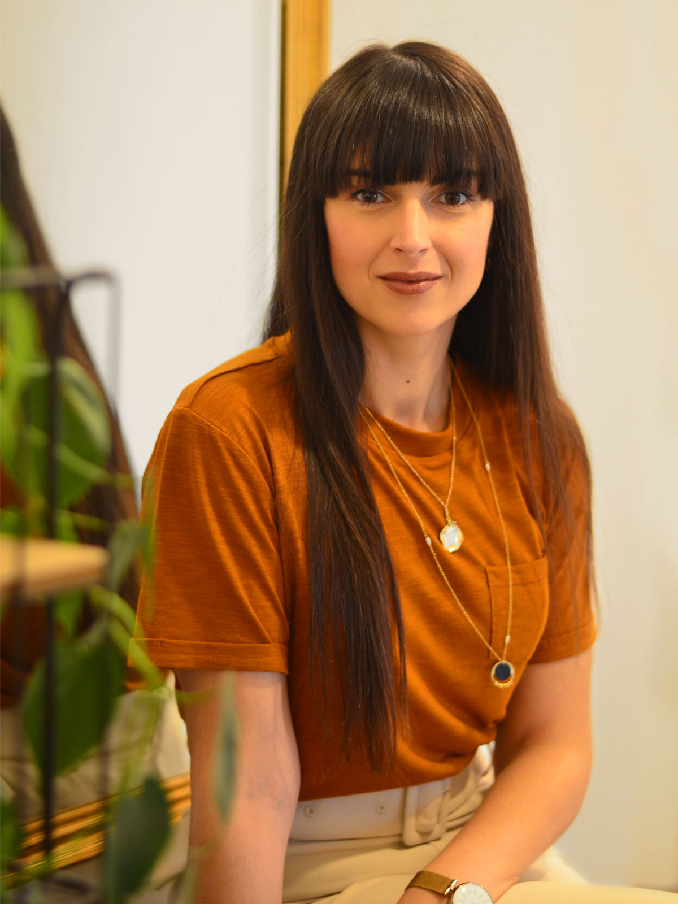
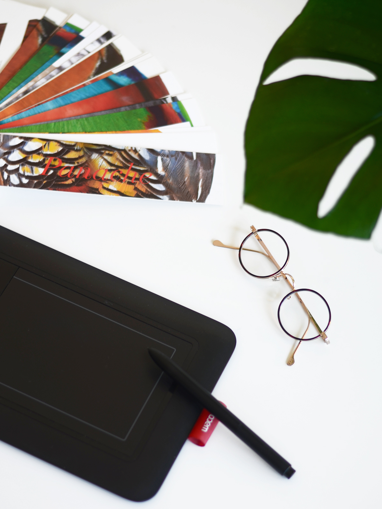

Derrière le studio
Bonjour, je suis Elsa.
Passionnée par la direction artistique, je mets mon savoir-faire au service de vos projets pour concevoir une image de marque forte et cohérente.
Mon parcours m'a appris à écouter attentivement et à structurer des concepts visuels à forte valeur ajoutée. À travers le Studio Mund, j'interviens seule en tant qu'interlocutrice privilégiée, ou entourée d'un écosystème d'experts talentueux selon les enjeux de votre marque.


Mon parcours
Suite à ma formation supérieure en design graphique, j'ai exercé plusieurs années au sein d'agences de communication et chez l'annonceur. J'ai notamment évolué dans le secteur prestigieux des vins et spiritueux (château Lynch-Bages, Cordier-Mestrezat), en e-commerce et en agences événementielles.
Ces expériences variées ont forgé ma rigueur créative et ma curiosité intellectuelle. En 2020, portée par une volonté d'indépendance, j'ai fondé le Studio Mund à Bordeaux afin de proposer une relation partenariale directe, réactive et flexible.
Pourquoi "Mund" ?
Inspirée par l'esprit nordique et ses lignes épurées (tant en architecture qu'en design graphique), je souhaitais y glisser un clin d'œil subtil. Mund signifie « bouche » en danois. La bouche incarne l'outil premier de la transmission, de la parole et du dialogue constructif, des notions que je place au cœur de mes échanges clients.
Un engagement sincère (1% pour la planète)
Sensibilisée de longue date au développement durable et à l'écologie, je suis convaincue qu'entreprendre peut rimer avec respect du vivant. Studio Mund s'engage concrètement en reversant chaque année 1% de son chiffre d'affaires auprès d'associations engagées telles que Greenpeace et L214.
C'est également une immense source de satisfaction de collaborer au quotidien sur des projets portant des valeurs éthiques et environnementales fortes.